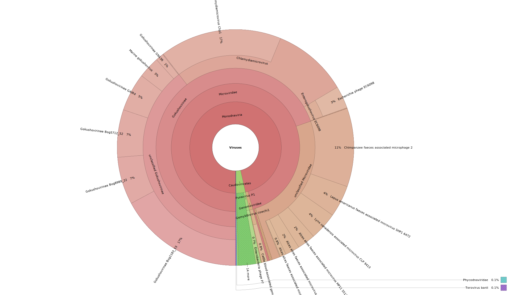

Tutorial: Analyzing a Virome Dataset with ViromeXplore
The following tutorial uses a 10,000 read subset of a virome from the human gut (SRR829034). The aim of this tutorial is that the user learns to use the workflows contained in the ViromeXplore software. The demo dataset is automatically downloaded with the github repo.
Quality Control and Classification
Run the following command to perform quality control and viral classification:
nextflow ViromeXplore.nf --pipeline qc_classify --reads "demo/demo_SRR829034_{1,2}.fastq"
The interactive Krona plot can be viewed here:
{kind=link}
The ViromeQC results show an enrichment score of 2.26, indicating that the virome is 2.8× more enriched than a comparable metagenome.
—
{kind=link}
Extend Incomplete Genomes
nextflow ViromeXplore.nf --pipeline high_quality_genomes \
--reads "results/fastp_output/demo_SRR829034_{1,2}.fastp.fq.gz" \
--contigs results/megahit_output/final.contigs.fa \
--viral_contigs results/checkv_output/viruses.fna
Log output shows no extension was performed (expected for demo data):
[01/23] Reading contigs and getting the contig end sequences...
[05/23] A total of 3 query contigs were imported.
...
no query was extended, exit! this is normal if you only provide few queries.
—
Taxonomic Annotation
Since no high-quality genomes were obtained, we run taxonomy annotation directly on the viral contigs:
nextflow ViromeXplore.nf --pipeline taxonomy_annotation \
--viral_contigs results/checkv_output/viruses.fna
Taxonomy Results: All viral genomese were successfully classified. - Family: Microviridae
seq_name |
length |
topology |
coordinates |
n_genes |
genetic_code |
virus_score |
fdr |
n_hallmarks |
marker_enrichment |
taxonomy |
|---|---|---|---|---|---|---|---|---|---|---|
k77_26 |
6476 |
DTR |
NA |
9 |
11 |
0.9837 |
NA |
2 |
14.7373 |
Viruses;Monodnaviria;Sangervirae;Phixviricota;Malgrandaviricetes;Petitvirales;Microviridae |
k77_25 |
5106 |
DTR |
NA |
8 |
11 |
0.9827 |
NA |
3 |
11.1680 |
Viruses;Monodnaviria;Sangervirae;Phixviricota;Malgrandaviricetes;Petitvirales;Microviridae |
k77_12 |
2899 |
No terminal repeats |
NA |
5 |
11 |
0.9783 |
NA |
1 |
4.6856 |
Viruses;Monodnaviria;Sangervirae;Phixviricota;Malgrandaviricetes;Petitvirales;Microviridae |
Functional Annotation: - The eggNOG analysis revealed proteins related to:
Structural molecule activity
ATP binding
Viral process
—
Directory structure
Each pipeline step creates its own directory, keeping the workflow organized and reproducible, for example:
results/
│
├── samtools_output/
├── megahit_output/
├── bowtie_output/
├── vsearch_output/
├── eggnog_mapper_output/
├── checkv_output/
├── viromeQC_output/
├── fastp_output/
├── geNomad_output/
├── virsorter_out/
├── cdhit_output/
├── mapping_summary_output/
├── kaiju_output/
└── cobra_output/